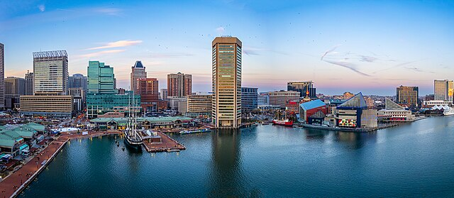

Maryland
Home
Baltimore
Frederick
Annapolis
Contact Us
Baltimore

The city's population: 585,708
Year the city was incorporated: 1729
Region in which city is located: Central Maryland
Classification: Urban
Average income level compared to the rest of the state: Low